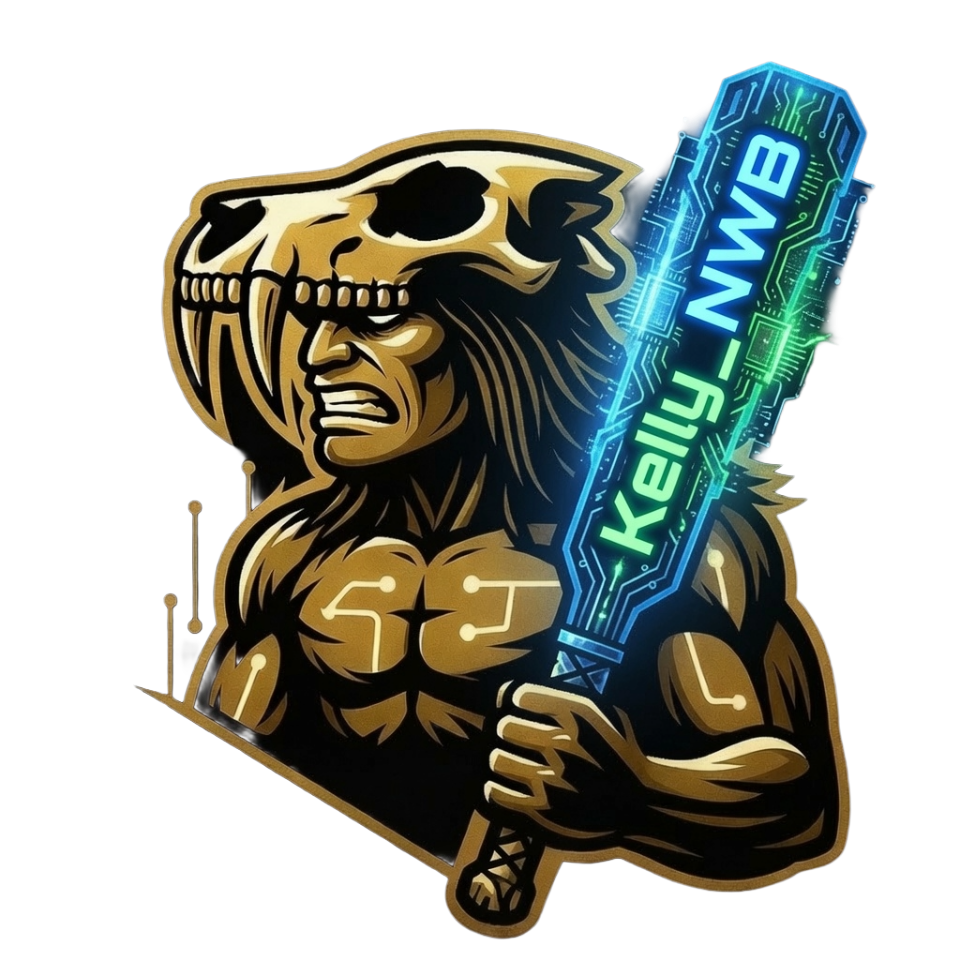

WTF is a Kaveman Kelly?
Born and raised in Idaho. Kaveman, Class of '88. Navy vet (nukes). Then a career. Twenty-five years leading service and support organizations across Idaho and the PNW. I have built bridges and solved real problems my whole adult life. Burned a few along the way too. It happens.
Always been a writer. Could not draw for shit. I am a data guy. Then AI changed everything. Last five years in the trenches, stacking new skills and sharpening old ones. Now I can build whatever you need: logos, visuals, productivity tools, training, the works. Try me.
That is why NWB Vending exists. Practical solutions for small businesses right here in Kuna and the Treasure Valley. Signs, branding, efficiency tools, America 250 materials, and anything else that actually helps you win. No hype. No B.S. Just honest, local, GenX problem solving with an AI twist. A deadly combo.
The town I grew up in has grown up. So much change. And nestled in the heart of Kuna, Super C is still thriving. That damn little gas station is the hub of Kuna. Still there. Won't quit. The resiliency and tenacity of a Kaveman.
Thinking about all those years and Super C, the nostalgia hit hard. Inspiration hit. I made them some things. And here we are.
I see my beloved town burst with new business and new people. Married thirty-five years to my Idaho vixen (she's from Meridian though, shhhh). We raised two amazing kids and live ten minutes from my folks, who still live in town.
Enough about me. That's boring. It is bridge building time.